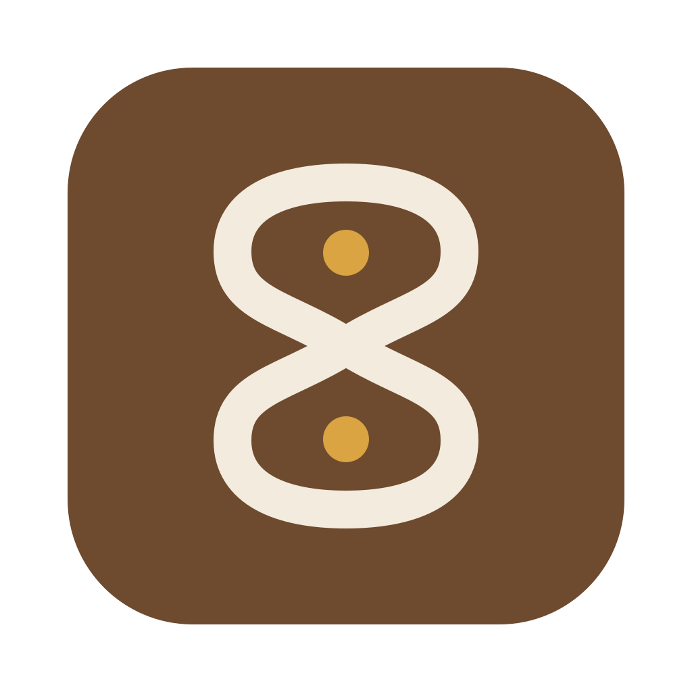
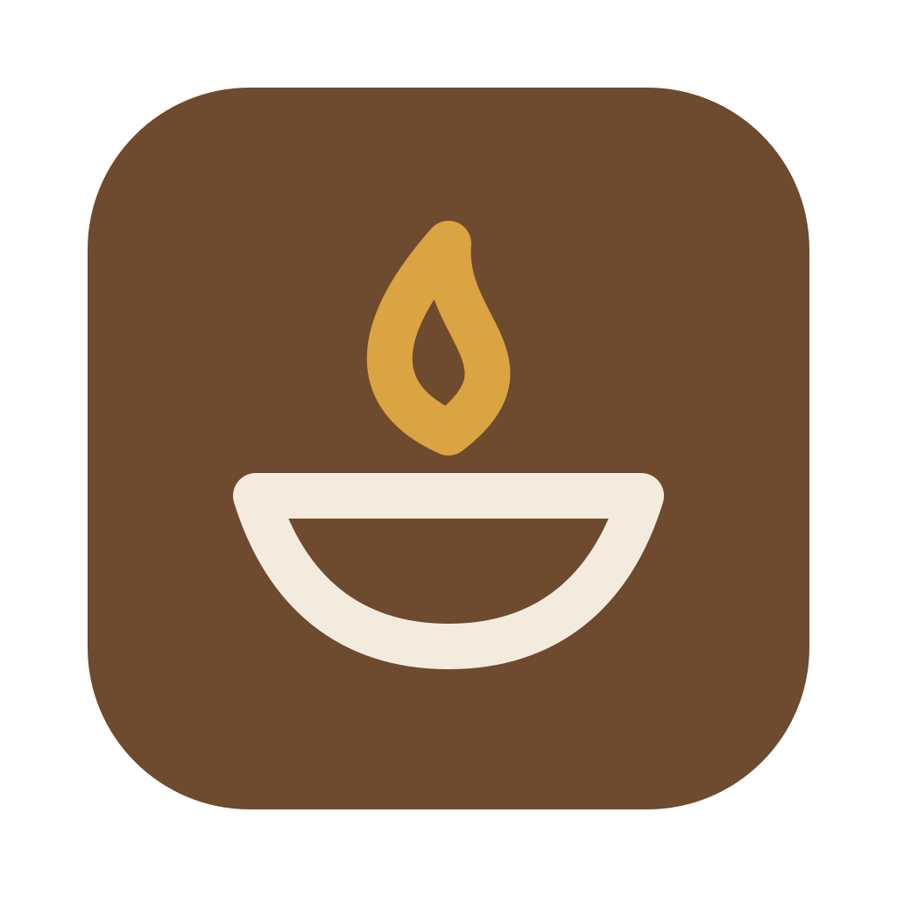
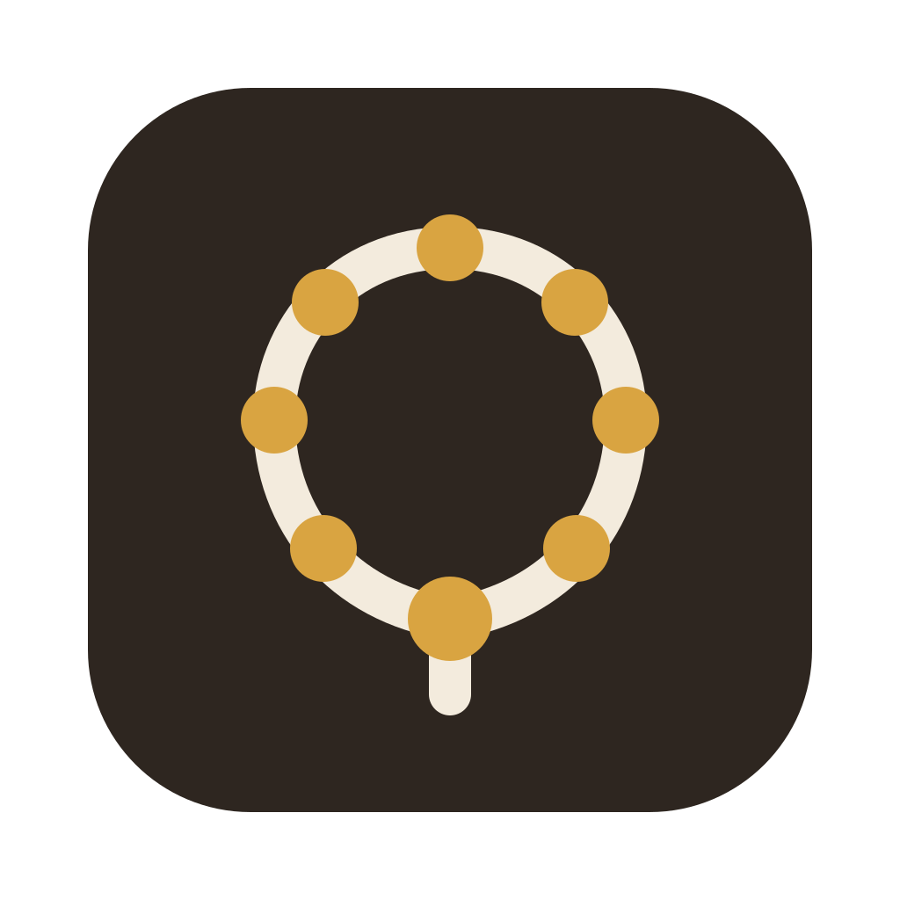
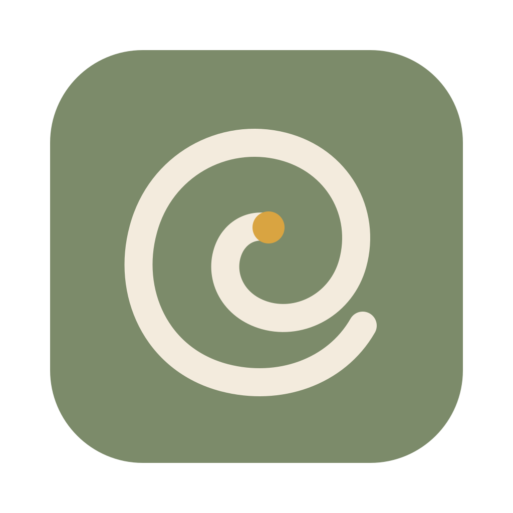

1. Practice LoopA single kolam-inspired line returns around two seeds of knowledge, making repetition the structure of the mark.

2. Return by StepsAn ascending stair folds into a generous return path, turning small deliberate advances into a recurring practice.

3. Tended FlameA quiet lamp frames learning as a flame sustained by attention rather than an answer handed over.

4. Review MalaA loop of tactile beads and one larger anchor bead makes scheduled review feel like returning to a familiar ritual.

5. Spaced SpiralA broad spiral revisits its center at widening intervals, expressing review that strengthens and expands understanding.

6. Connected UnderstandingTwo continuous branches connect three knowledge nodes, suggesting understanding built through relationships rather than isolated answers.